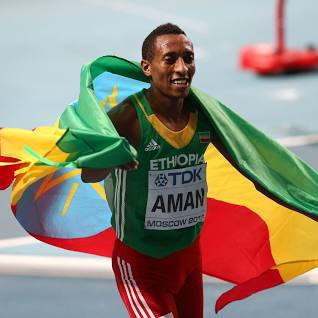

Tirunesh Dibaba born 1 June 1985 is an Ethiopian athlete who competed in long-distance track events and international road races. She has won three Olympic track gold medals, five World Championship track gold medals, four individual World Cross Country adult titles, and one individual WCC junior title. Tirunesh was the 5000 metres world record holder until 2020 when Letesenbet Gidey set her world record. At the 2005 IAAF World Championships in Helsinki, Finland, Tirunesh became the first woman to win the 5000 m and 10000 m at the same championship. She is the one of two women who won the short and long course World Cross Country title at the same championship (2005 in Saint-Galmier, France). With her 2003 World championship title, she became the youngest World Champion at the age of 18 years and 90 days. Tirunesh comes from a sporting family of several Olympic medalists, which includes her sisters Genzebe and Ejegayehu, and her cousin Derartu Tulu. The matriarch of the Dibaba athletics dynasty, Tirunesh is the most decorated of the family.
Mohammed Aman born 10 January 1994 is an Ethiopian middle-distance runner. Born in Asella, he is the winner of the 800-meter final at the 2013 World Athletics Championships in the Luzhniki stadium in Moscow. Aman also won consecutive 800 m titles at the 2009 and 2011 African Junior Athletics Championships.
Genzebe Dibaba Keneni born 8 February 1991 is an Ethiopian middle- and long-distance runner. A 1500 metres 2016 Rio Olympics silver medalist, she won a gold medal in this event and a bronze in the 5000 metres at the 2015 World Championships. Genzebe is the current world record holder for the 1500m, and the indoor events of the one mile, 3000m and 5000m